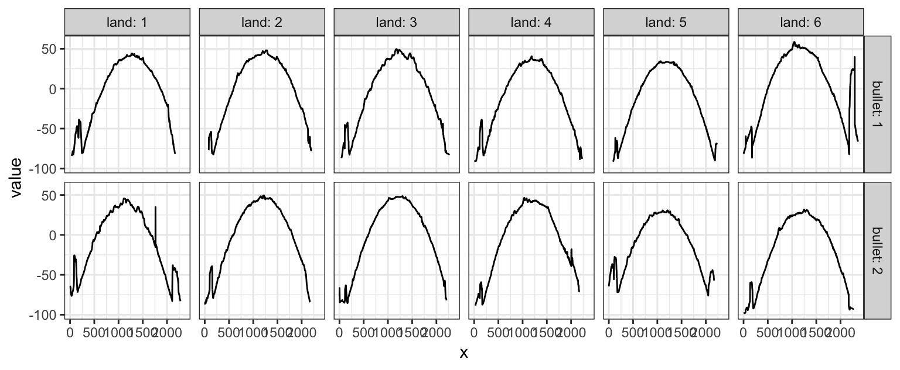
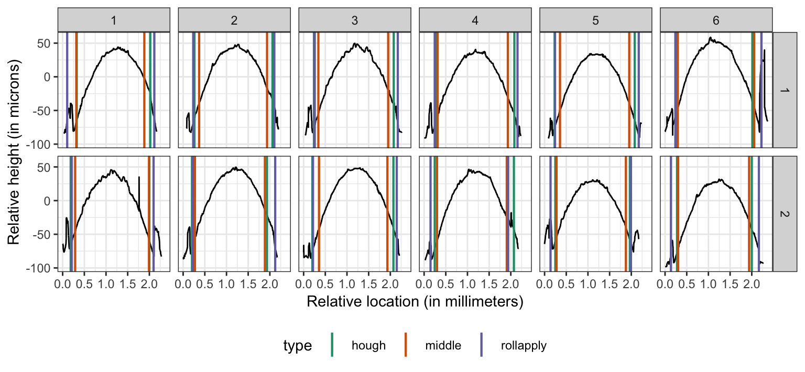

Identify groove locations
- Load libraries for setting things up
library(dplyr)
library(bulletxtrctr)
library(x3ptools)
library(ggplot2)
library(nbtrd) # devtools::install_github("csafe-isu/nbtrd")-
grooveFinderonly works on x3p files. See packagex3ptoolsat https://heike.github.io/x3ptools/ for ways to convert different file formats into x3p standard files. The NIST Research Ballistics Toolmarks data base (NRBTD)[https://tsapps.nist.gov/NRBTD/Studies/Search] provides access to scans of bullets and cartridge cases from various case studies.
We will work with two bullets from a single barrel of the Hamby 252 data set. Links to the 12 scans of bullet lands in x3p format are provided in the hamby252demo object.
These commands will read in the bullets directly from the NRBTD repository, without downloading the files into your working directory:
if (!dir.exists("README_files/data")) {
dir.create("README_files/data")
}
if (!file.exists("README_files/data/bullet1/HS44_Barrel1_Bullet1_Land1.x3p")) {
# NRBTDsample_download("README_files/data")
}
b1 <- read_bullet("README_files/data/bullet1")## 6 files found. Reading ...## 6 files found. Reading ...Combine the results into a single data frame:
Change measurements to microns and flip scans along y axis:
bullets <- bullets %>% mutate(
x3p = x3p %>% purrr::map(.f = x3p_m_to_mum)
)
# turn the scans such that (0,0) is at the bottom left
bullets <- bullets %>% mutate(
x3p = x3p %>% purrr::map(.f = function(x) x %>%
y_flip_x3p())
) - Get cross sections for each of the lands:
bullets <- bullets %>% mutate(
crosscut = x3p %>% purrr::map_dbl(.f = x3p_crosscut_optimize)
)
# now extract the crosscuts
bullets <- bullets %>% mutate(
ccdata = purrr::map2(.x = x3p, .y = crosscut,
.f = x3p_crosscut)
)Visualize the cross cuts:
crosscuts <- bullets %>% tidyr::unnest(ccdata)
crosscuts %>%
ggplot(aes(x = x, y = value)) +
geom_line() +
facet_grid(bullet~land, labeller="label_both") +
theme_bw()
- Get groove locations
bullets <- bullets %>% mutate(
grooves_middle = ccdata %>%
purrr::map(.f = cc_locate_grooves, method = "middle",
adjust = 30, return_plot = FALSE),
grooves_rollapply = ccdata %>%
purrr::map(.f = cc_locate_grooves, method = "rollapply",
adjust = 30, return_plot = FALSE)
)
bullets <- bullets %>% mutate(
grooves_hough = x3p %>% purrr::map(.f = x3p_to_df) %>%
purrr::map(.f = cc_locate_grooves, method = "hough",
adjust = 30, qu = 0.9, return_plot = FALSE)
)
bullets <- bullets %>% mutate(
hough_left = grooves_hough %>% purrr::map_dbl(.f = function(x) x$groove[1]),
middle_left = grooves_middle %>% purrr::map_dbl(.f = function(x) x$groove[1]),
rollapply_left = grooves_rollapply %>% purrr::map_dbl(.f = function(x) x$groove[1]),
hough_right = grooves_hough %>% purrr::map_dbl(.f = function(x) x$groove[2]),
middle_right = grooves_middle %>% purrr::map_dbl(.f = function(x) x$groove[2]),
rollapply_right = grooves_rollapply %>% purrr::map_dbl(.f = function(x) x$groove[2])
)Visualize the grooves to see the differences in identifications between the different methods:
profilesplus <- bullets %>% tidyr::gather(type_side, location, hough_left:rollapply_right) %>%
tidyr::separate(type_side, into=c("type", "side")) %>%
tidyr::unnest(ccdata) # gets rid of all the other list variables
profilesplus %>%
ggplot(aes(x = x/1000, y = value)) +
facet_grid(bullet~land) +
geom_line() +
geom_vline(aes(xintercept=location/1000, colour=type), size=0.75) +
theme_bw() +
scale_colour_brewer(palette="Dark2") +
theme(legend.position = "bottom") +
xlab("Relative location (in millimeters)") +
ylab("Relative height (in microns)")